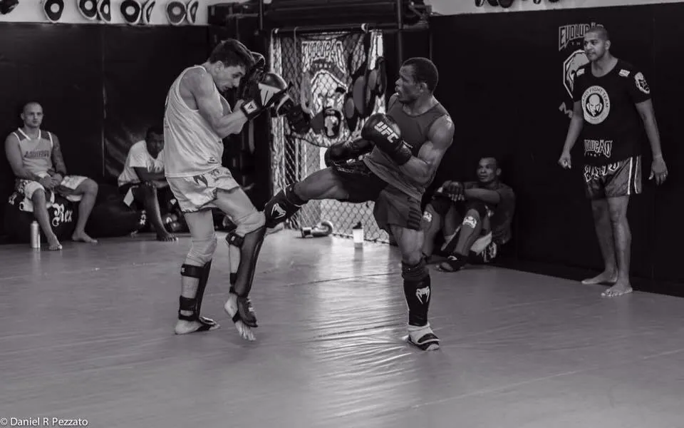
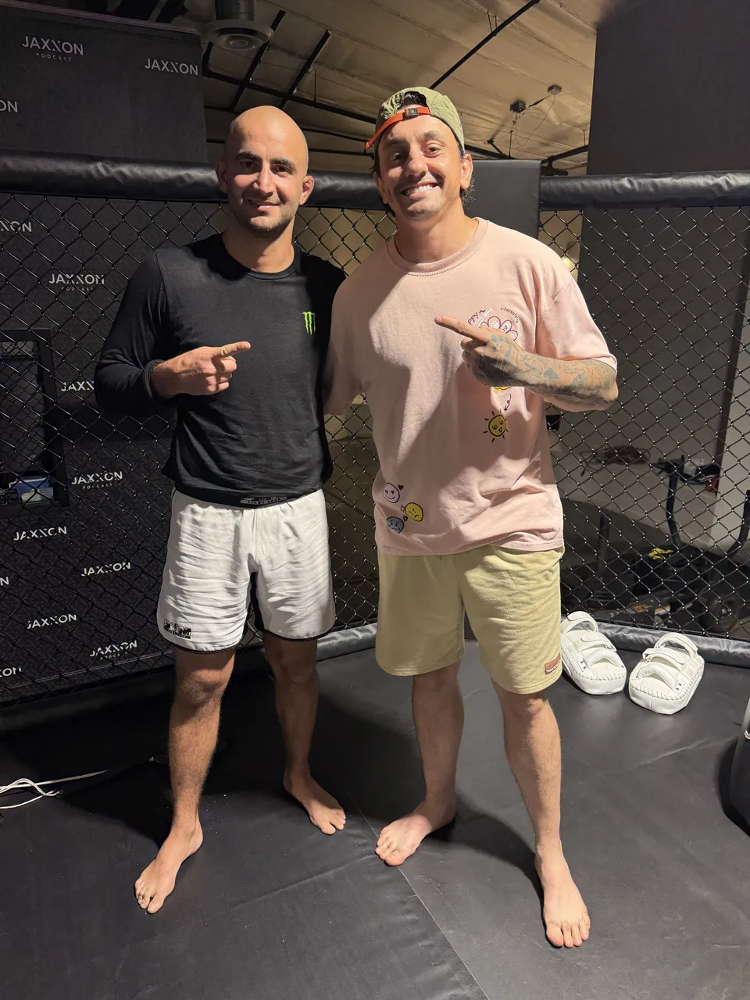
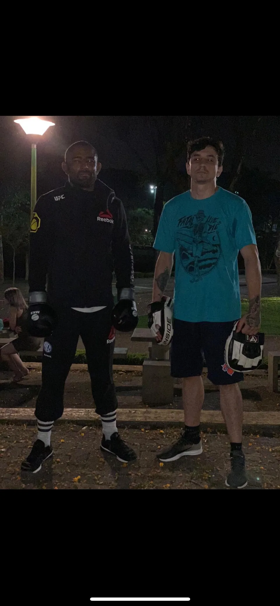
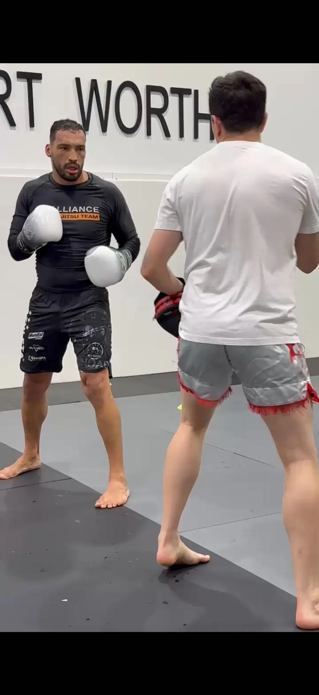

Ya sabes pegar. Ahora, ¿por qué no mejoras?
Llevas meses, o un año, en clases de grupo. Vas dos o tres veces por semana. Y sigues con la misma guardia baja, la misma patada que no gira, el mismo lío en el clinch. No es falta de horas. Es que en una clase de 20 personas nadie tiene tiempo de mirar las tuyas. Para eso existe un entrenador personal.
No vengo a sustituir a tu entrenador ni a tu club. Vengo a hacer lo que en el grupo no cabe: mirarte a ti, sesenta minutos, y decirte la verdad sobre lo que estás haciendo mal.
Los cinco fallos que nadie te corrige en una clase de grupo.
Los he visto en cientos de alumnos de gimnasio que llegaban convencidos de que eran avanzados. No es culpa suya ni de su entrenador. Es el formato.
La guardia se cae al golpear
Al lanzar el cross, la otra mano baja. En el saco no pasa nada. En sparring te lo cobran. Se arregla en dos sesiones con repetición corregida en cada golpe.
La patada no gira la cadera
Patada de pierna, no de cadera. Bonita en el vídeo, floja en el pao. La diferencia entre una patada que duele y una que no está en el pie de apoyo.
El clinch es un abrazo
Agarras y esperas. El clinch es control de la cabeza, ángulos y desequilibrios. Es la parte que menos se enseña en grupo y la que más cambia tu muay thai.
Distancia fija
Siempre a la misma distancia del rival. Entrar, golpear, salir con ángulo: eso se enseña uno a uno, con alguien que te empuja fuera de tu zona cómoda.
Defensa por reflejo, no por lectura
Bloqueas cuando ya te han dado. Leer el hombro, el pie, el cambio de peso. Eso lleva repeticiones con feedback inmediato, no con el entrenador al otro lado de la sala.
Tu gimnasio sigue siendo tu gimnasio. Yo soy el que te mira.
El formato que mejor funciona para gente que ya entrena en grupo, sin dejar el grupo.
Sesión de evaluación
Sesenta minutos. Me enseñas cómo golpeas, hacemos paos y algo de trabajo técnico. Salgo con una lista de tres cosas, en orden de prioridad.
Una sesión al mes, o cada dos semanas
Trabajamos una sola cosa a fondo. Te llevas dos o tres ejercicios para practicar en tu grupo hasta la siguiente.
Vídeo entre sesiones
Me mandas 30 segundos de sombra o saco por WhatsApp. Te devuelvo una corrección. Sin coste, forma parte del trabajo.
Preparación para competir, si es tu caso
Estrategia, esquina, plan de pelea. He estado en la esquina de peleadores de UFC y Rizin. Sé lo que hace falta y lo que no.
Con quién he compartido tatami y esquina.




Preguntas de los que ya entrenan.
¿Necesito un entrenador personal si ya voy a clases de grupo?
No automáticamente. Primero identifica qué habilidad y qué feedback te faltan. Si llevas seis meses con el mismo fallo, la respuesta es sí: nadie lo va a corregir por ti en un grupo de 20.
¿No es una falta de respeto a mi entrenador?
No. Cualquier entrenador serio sabe que en un grupo no puede mirar a todos. Muchos de mis alumnos vienen recomendados por su propio entrenador. Si prefieres que hablemos los dos, lo hago.
¿Con qué frecuencia?
Una sesión al mes ya cambia cosas si practicas lo que te llevas. Cada dos semanas es el punto ideal para alguien que entrena en grupo tres veces por semana.
¿Trabajas también MMA y jiu-jitsu?
MMA, sí: derribos, defensa de derribo y parte del trabajo de suelo, el que se puede hacer sin tatami. Jiu-jitsu ahora no.
¿Preparas para competir?
Sí. Plan de pelea, estrategia contra un rival concreto, esquina el día de la pelea si cuadra. Lo hablamos en la evaluación.
¿Cuánto cuesta?
30 € la sesión de 60 minutos, 270 € el bono de 10 clases. El vídeo entre sesiones va incluido.
Una sesión de evaluación. Tres cosas que corregir.
30 €, 60 minutos. Sales con una lista clara de lo que te frena y en qué orden atacarlo.